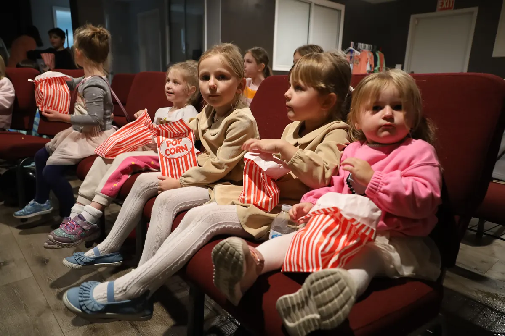
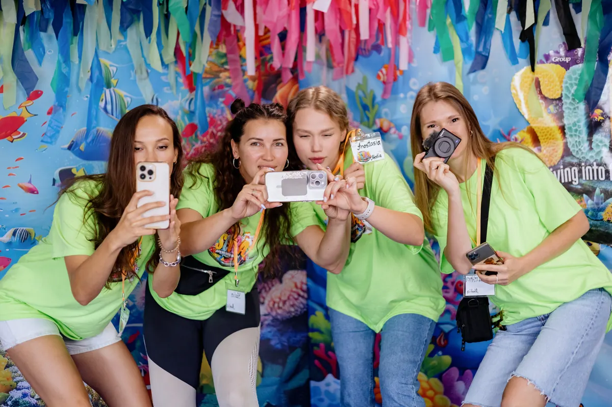
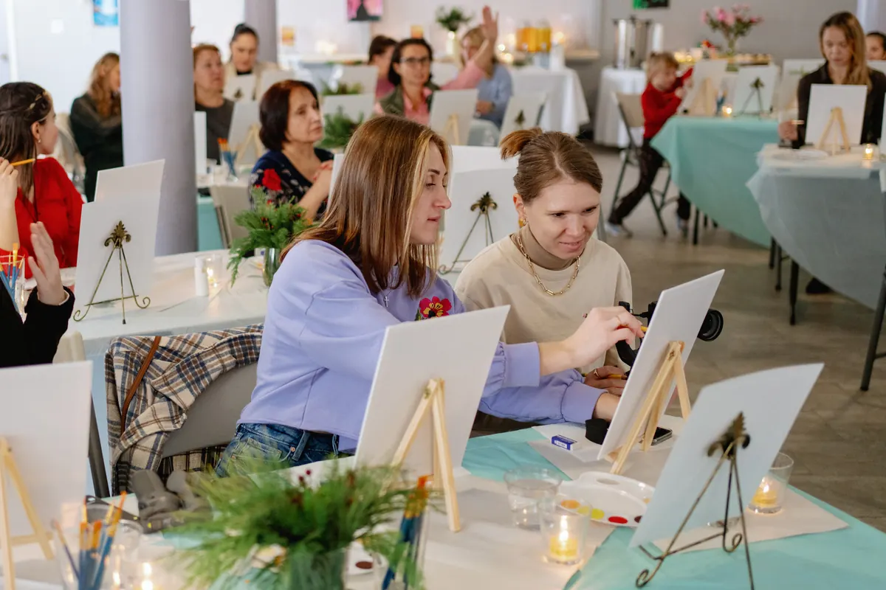
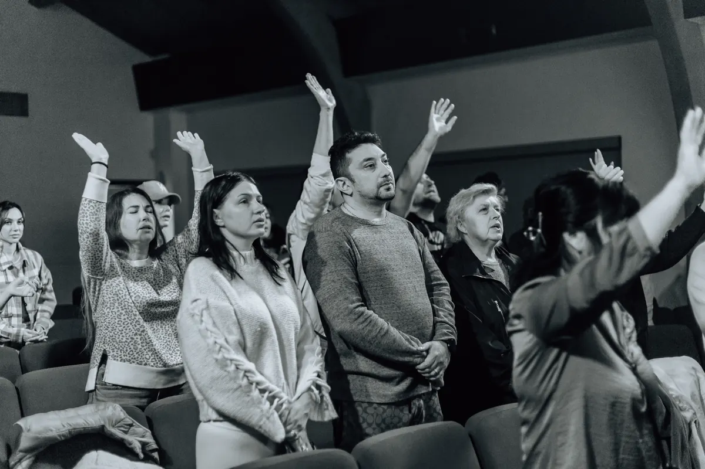
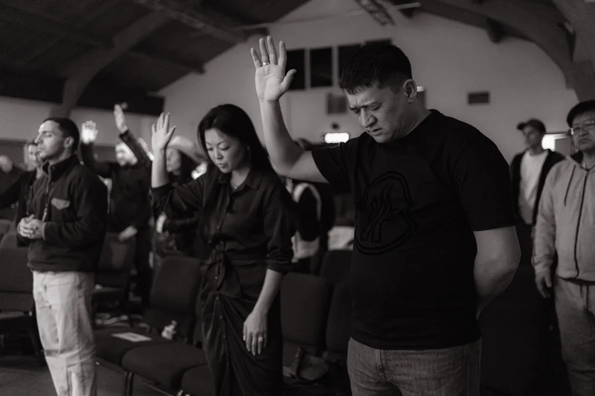
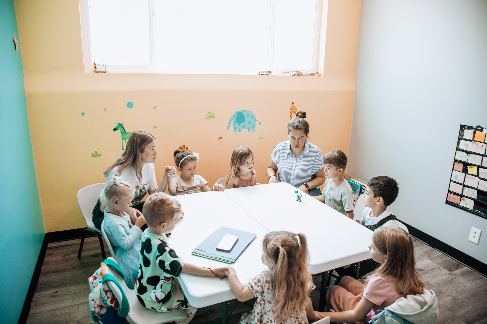
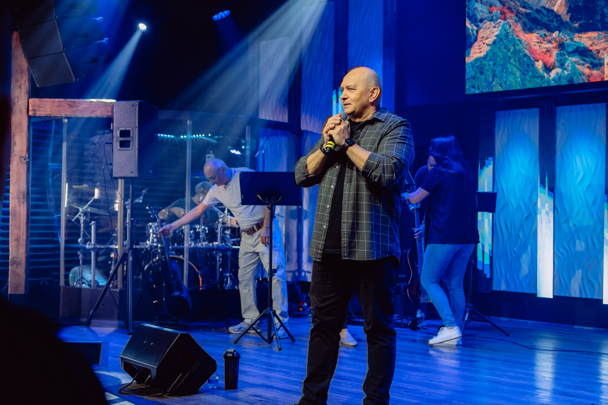
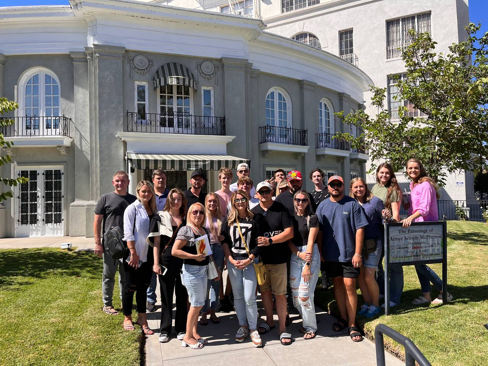

Ages 0–12
KidsZone
A safe and joyful place where children discover Bible stories, play, and make friends.
Learn more →Make friends, explore faith, and find ways to help.

A safe and joyful place where children discover Bible stories, play, and make friends.
Learn more →
A place for teenagers and young adults to make friends, ask questions about faith, and support one another.
Learn more →
A welcoming group for women to make friends, pray, and talk about life and faith — led by Pastor Marina Malko.
Learn more →
You can ask us to pray for you or join others in prayer. We pray for people in our community and around the world.
Request Prayer →
Small groups meet in homes to read the Bible, pray, talk about life, and support one another.
Find a Group →Musicians and singers help everyone take part in Sunday worship through music.
Get Involved →KidsZone is for children ages 0–12. We want every child to feel safe, cared for, and welcome.
Children discover Bible stories about Jesus through activities suited to their age, games, and creative play. KidsZone is part of our Sunday gathering.
If you are visiting with children for the first time, contact us ahead of time — we would love to answer questions and help you prepare.
Ask About KidsZone →

CLA Youth is for teenagers and young adults ages 13–25. It is a place to belong, build real friendships, and explore faith without pressure.
We talk about Jesus, explore what faith means in everyday life, and help young people find their place in the group.
If you want to learn more or visit for the first time, contact us — we would love to meet you.
Contact the Youth Group →Our women’s group is led by Pastor Marina Malko. It is a place for friendship, prayer, and honest conversations about life and faith.
We read the Bible, encourage one another, and help every woman feel welcome.
If you would like to connect or learn about upcoming opportunities for women, please contact us.
Contact the Women's Group →

Small groups meet in homes to read the Bible, pray, talk about life, and support one another.
Contact us if you have questions about Life Groups.
Find a Group →Everyone has something to contribute. Welcome guests, help with children’s activities, join the music or media team, or lend a hand behind the scenes.